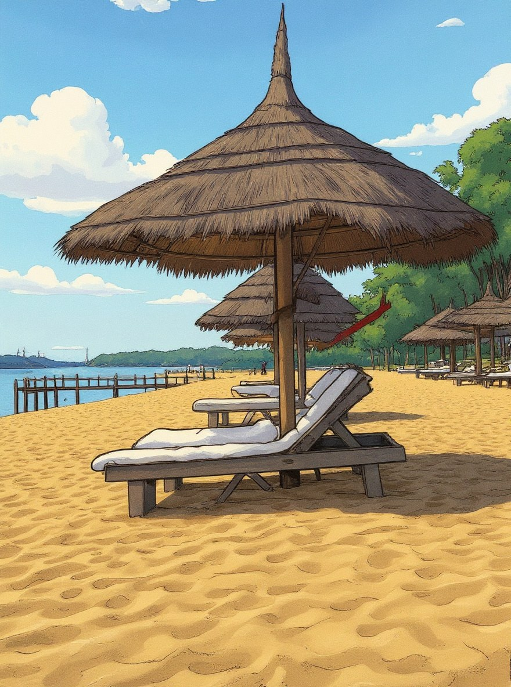

Make Pinterest Before and After Pins
Combine an original image and an edited result into a clean vertical Pinterest pin. The images stay in your browser and download as a ready-to-share 2:3 poster.
 Before
Before
AfterShow the transformation clearly
A before-and-after image makes your edit easy to understand at a glance. Use it for AI art results, travel photo edits, product retouches, profile makeovers, and Pinterest posts.
Create a vertical 2:3 image designed for Pinterest boards and search feeds.
Keep the edited result large while showing the original photo in a small corner.
This quick layout tool runs in your browser and does not use AI quota.
How to make a before and after pin
Choose the photo you started with, such as a travel shot, portrait, or product image.
Upload the AI edit, retouched image, or artwork you want to feature.
Save a clean vertical before-and-after image for Pinterest or your blog.
Pinterest Before and After FAQ
Does this use AI quota?
No. This is a local layout tool for combining two images, so it does not use your AI generation allowance.
What size is the output?
The current tool creates a vertical 2:3 image, which is a common Pinterest-friendly format.
Can I use results from PictTool?
Yes. Use your original image as the before photo and your PictTool result as the after photo.